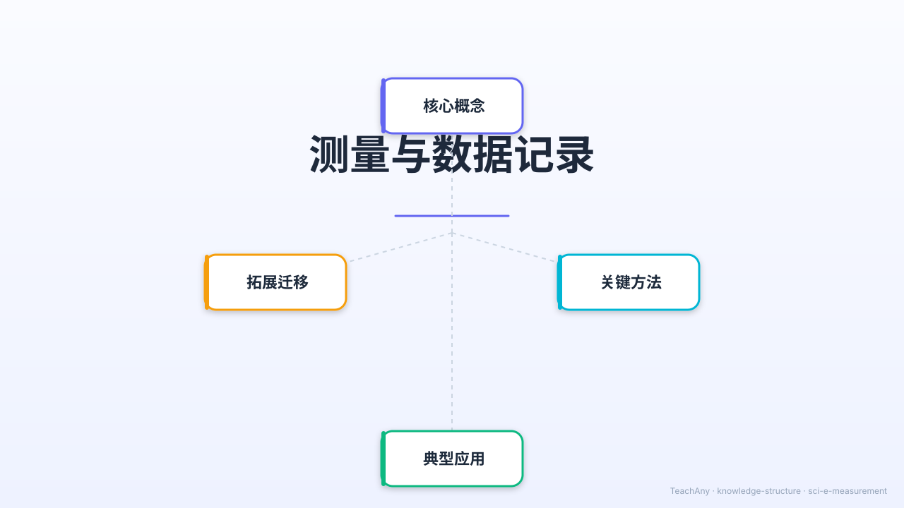

用数字说话，让科学更精确。学会测量，你就能发现隐藏在世界里的规律！

完成本课后，你可以做到以下几点：
解释"数字描述"比"语言描述"更精确的原因
根据测量对象选择合适的工具：直尺、秤、温度计、量杯
掌握对准0刻度、垂直读数等正确操作方法
用表格记录测量结果，数值和单位缺一不可
故事始于一次日常的小困惑…
小明想给妈妈买一双合脚的鞋，他打电话说："妈妈，我的脚挺大的。"小红想量量教室有多长，她说："教室很长，大概走十几步吧。"大家都觉得这样说够了…
但妈妈买回来的鞋太小了！因为"挺大"每个人理解不同。老师问"教室多长"，每个同学走的步数都不一样！没有精确数字，大家根本没办法沟通准确的信息。
因此，科学家发明了测量工具，用统一的数字和单位来描述世界。小明的脚是22厘米，教室是9米——任何人都能明白，任何地方都通用！这就是测量的力量。
💭 思考一下：你有没有遇到过"说不清楚"的情况？如果有了测量数字，那个情况会不会变简单？
用数字说话，让科学交流变得精确、可靠、可重复。
🌡️ 医生说：你发烧了，体温挺高的 ← 用这个说法，医生能开正确的药吗？
🌡️ 医生说：你发烧了，体温 38.5°C ← 现在能判断了！
五个场景带你系统掌握测量知识
📼 5 个场景 · 22秒 · H264 · 1920×1080 · 配有 TTS 语音
不同的量，要用不同的工具。选对工具，测量才准确！
测量 长度
铅笔有多长？教室有多宽？
测量 重量
书包有多重？苹果多少克？
测量 温度
今天室温多少？水有多热？
测量 液体体积
喝了多少果汁？锅里的水？
🎯 记忆口诀：长度用尺量，重量用秤称，温度看温度计，液体用量杯！
掌握三步骤，测量结果才准确！
把物体的一端对准尺子的 0刻度 位置
⚠️ 很多直尺 0 刻度不在最边缘，要仔细看！
物体的另一端对应的数字，就是它的长度
📏 单位是厘米(cm)，记得写上！
眼睛要垂直对准刻度线，不能斜着看
👁️ 斜着看会让读数偏大或偏小！
拖动物体到直尺上，练习正确读取测量数值！
👆 用鼠标拖动彩色物体，把它的左端对准0刻度，然后读出长度！
数字 + 单位 = 完整的科学记录。两者缺一不可！
⚠️ 重要提示：只写数字 "5" 是不够的！
5 厘米 ≠ 5 米 ≠ 5 毫米 — 单位完全不同，意义天壤之别！
在下方输入你的测量数值，完成后点击"检查记录"！
| 测量对象 | 使用工具 | 测量数值 | 单位 | 我的记录（数值+单位） |
|---|---|---|---|---|
| 铅笔长度 | 📏 直尺 | 17 | 厘米(cm) | |
| 课本厚度 | 📏 直尺 | 1.2 | 厘米(cm) | |
| 书包重量 | ⚖️ 秤 | 3.5 | 千克(kg) | |
| 室内温度 | 🌡️ 温度计 | 22 | 摄氏度(°C) | |
| 一杯水的体积 | 🧪 量杯 | 250 | 毫升(mL) |
选择正确答案，答错了会告诉你原因！
测量是科学探究的基础工具，连接多个学习模块。
完成课程各模块，解锁徽章！
回顾四大要点，带走最核心的知识！
语言描述不精确，数字才能准确传达信息，让他人能重复、验证结果。
长度→直尺，重量→秤，温度→温度计，液体体积→量杯。选对工具是第一步！
一端对准0刻度，另一端读数字，视线垂直刻度。三步骤，测量才准确！
数字 + 单位，缺一不可！用表格记录，方便比较、发现规律。